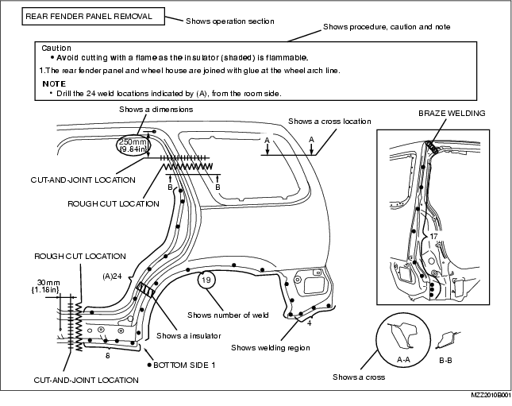
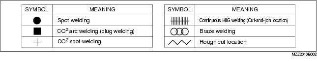
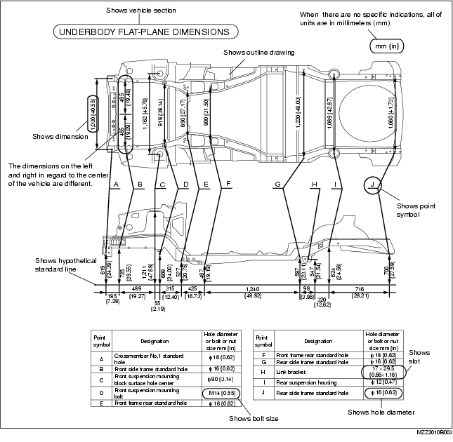
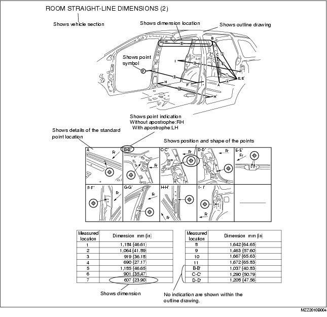
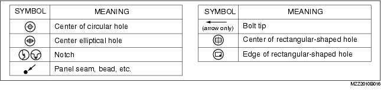

How to use this manual
Efficient Replacement of Body Panels
• This section contains information on the body panels in regard to the welding types, number of spot welds, and cut-and-join locations that are necessary for panel removal and installation.
• The type of weld and position are indicated by symbols.
• Some sections have notes concerning the operation being performed. Thoroughly read and understand the notes before carrying out any procedures.
Example

Symbols of Panel Replacement
• The following 6 symbols are used to indicate the type of weld that is used when replacing body panels.

Body Dimensions (Flat-plane Dimensions)
• Flat-plane dimensions are the dimensions measured by projecting certain reference points onto a plane surface.
• When there are no specific indications, the standard points and dimensions are symmetrical in regard to the center of the vehicle.
• The hypothetical lines may differ according to the vehicle model.
Example

Body Dimensions (Straight-line Dimensions)
• Straight-line dimensions are the actual dimensions between two standard points.
• When there are no specific indications, the standard points and dimensions are symmetrical in regard to the center of the vehicle.
Example

Symbols of Body Dimensions
• The following 8 symbols are used to indicate the standard points.
